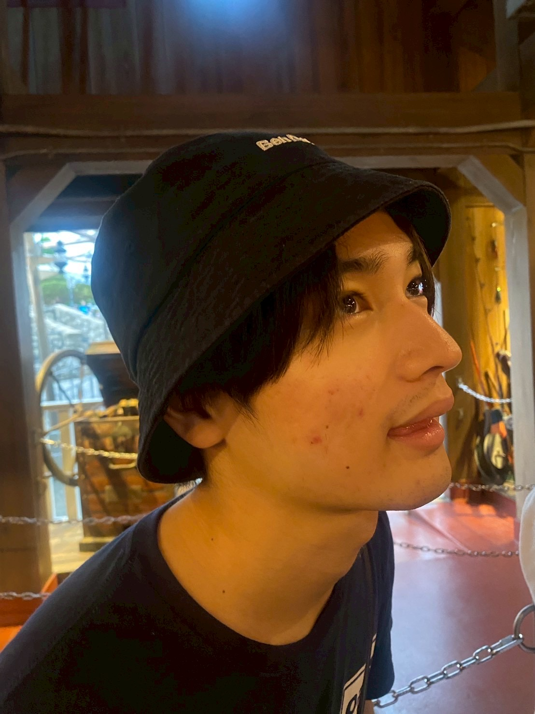

佐多 亮明（さた よしあき）のページ

自己紹介
荒療治をします
自然言語処理が好きで、大規模言語モデル周りの合成データ生成や評価ベンチマーク構築に取り組んでいます
休暇はドライブしたり、スーパー銭湯を巡ったり、スポーツを観戦したり
テキスト置き場に日記やメモを残していく予定
興味分野
- Natural Language Processing
- Data Engineering
- MLOps
学歴
- 2024年4月 ~ 現在筑波大学大学院システム情報工学研究群情報理工学位プログラム
- 2020年4月 ~ 2024年3月筑波大学情報学群情報科学類
- 2017年4月 ~ 2020年3月東京都立新宿高等学校
職歴
インターン
下記は全て機械学習エンジニアとしての経験です- 2024年12月 ~ 現在シェルパ・アンド・カンパニー株式会社
- 2024年8月 ~ 2024年9月ソフトバンク株式会社
- 2024年4月 ~ 2024年7月株式会社ELYZA
資格
- 応用情報技術者
- TOEIC 800点
- サウナ・スパ健康アドバイザー